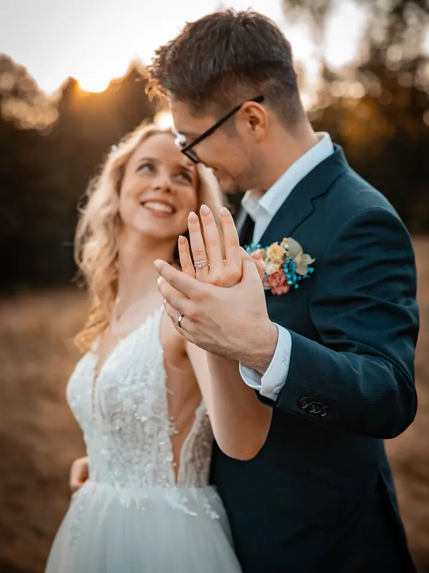
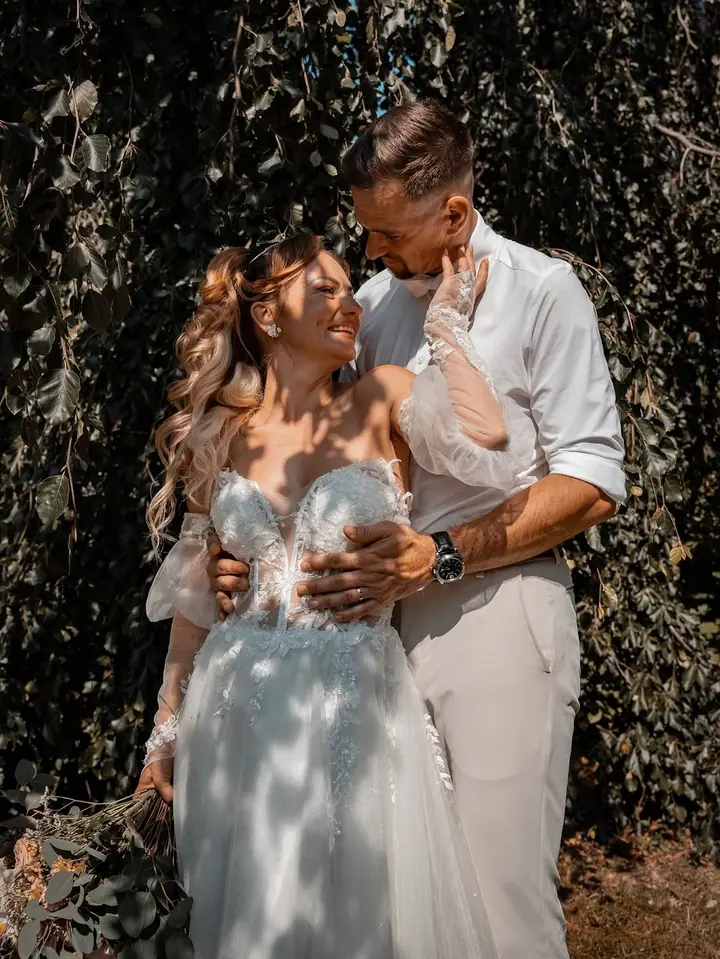
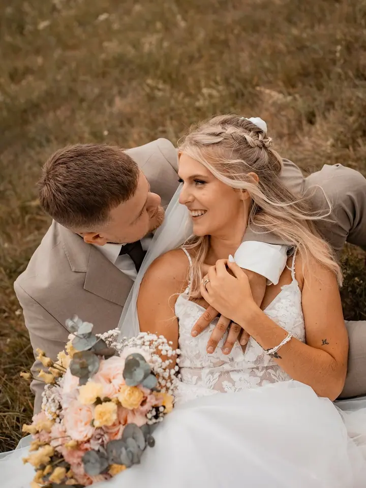

jedna
Svatební fotografie
Svatby fotíme nejčastěji spolu, takže váš den vidíme dvěma různými pohledy. Můžeme být s vámi od ranních příprav až po večerní zábavu, nebo nafotit jen obřad.

Svatební a rodinní fotografové · Jablonec nad Nisou

Jmenujeme se Viola a Petr a jsme manželský pár z Jablonce. Fotíme spolu svatby, těhotenství, miminka i celé rodiny, nejčastěji venku v teplém večerním světle.
Více o mně
Co fotím
jedna
Svatby fotíme nejčastěji spolu, takže váš den vidíme dvěma různými pohledy. Můžeme být s vámi od ranních příprav až po večerní zábavu, nebo nafotit jen obřad.
dvě
Sami jsme rodiči, a tak víme, jak cenné jsou vzpomínky na úplně první chvíle s dětmi. Fotíme těhotenství, miminka i děti.
tři
Vás samotné, s partnerem nebo s celou rodinou. Ať jde o výročí, narozeniny, nebo jen chuť zachytit, jak to u vás teď vypadá.
Krátké dvacetiminutové focení ve vánoční výzdobě. Dostanete 8 upravených fotek a jejich tisk 10×15 je už v ceně.
Vzpomínky, ke kterým se rádi vrátíte
Za objektivem
Kromě dvouletého syna nás spojuje i láska k focení. Fotíme oba od dětství a nejčastěji spolu, ale klidně i každý zvlášť. Díky tomu vidíme každou chvíli ze dvou stran.
Většinu roku trávíme na svatbách. Jsme s vámi od ranních příprav až po večerní zábavu, nebo jen u obřadu, podle toho, co si přejete. Kromě svateb fotíme také miminka, těhulky, páry, rodiny, kamarádky a kamarády, oslavy a plesy.
Sami jsme rodiči, takže víme, jak rychle první měsíce s dítětem utečou a jak dobré je mít je na fotkách. Když budete mít zájem nebo jakýkoli dotaz, napište nám. Na všem se společně domluvíme.
Viola
Nejradši komunikujeme přes e-mail nebo sociální sítě a odepisujeme téměř okamžitě. Stačí poslat datum a pár slov o tom, co si představujete.
Společně projdeme, jestli chcete fotit celý den, nebo jen obřad, a kdo z nás dvou přijede. Na všem se domluvíme tak, aby vám to sedělo.
Svatby fotíme nejčastěji spolu, takže jeden může být u nevěsty a druhý u ženicha nebo hostů. Rodinná a párová focení bereme v klidu, aby se všichni cítili dobře.
Upravené svatební fotografie vám obvykle dodáme do 30 dnů. K svatbě nabízíme ozdobný box s USB diskem.
Portfolio
Otázky
Ano, volné termíny máme pro rok 2026 i 2027. Napište nám datum a hned vám potvrdíme, jestli je volné.
Nemusíte. Můžeme fotit od ranních příprav až po večerní zábavu, ale stejně tak jen samotný obřad.
Upravené svatební fotografie obvykle dodáváme do 30 dnů od svatby.
Focení trvá 20 minut a stojí 1 800 Kč. Dostanete 8 upravených fotek, každá další je za 100 Kč a tisk 8 fotek 10×15 je v ceně. Rezervační poplatek 500 Kč se pak odečte z ceny.
Napište pár vět o tom, co si představujete. boskovicphoto@gmail.com